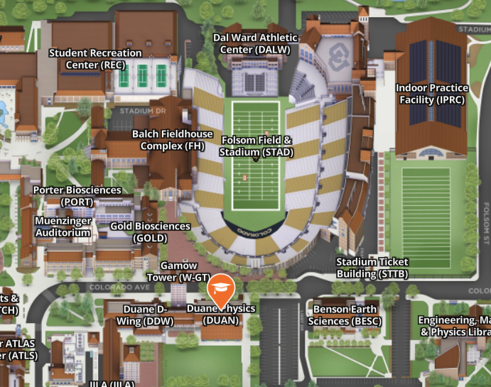

20.5ATOC 4815/5815
Python Fundamentals - Week 1
Will Chapman
CU Boulder ATOC
2026-01-01
Python Fundamentals I
Today’s Objectives
- Understand why Python for atmospheric science
- Work with essential data types (numbers, strings, lists)
- Access and manipulate data with indexing
- Organize data with dictionaries
- Control program flow with if/else and loops
- Write reusable functions
Reminders
Due Sunday at 12pm:
- Lab 1
- HW1
Office Hours:
Will: Tu 11:15-12:15p Th 9-10a Aerospace Cafe
Aiden: M / W 330-430p DUAN D319

Python Ecosystem
Why Python for Atmospheric Science?
What You’ll Do:
- Read NetCDF climate data files
- Process time series (temperature, precipitation)
- Create maps and plots
- Run statistical analyses
- Automate repetitive tasks
Why Python?
- Free and open source
- Huge scientific community
- Libraries: NumPy, Pandas, Xarray
- Same tool for analysis AND visualization
- Reproducible research
Two Ways to Write Python
Notebook (.ipynb)
- Jupyter / VS Code
- When: Exploring data, prototyping
- Mix code, text, plots
- Great for: homework, reports
- Example: “Let me see what this dataset looks like”
Script (.py)
- Plain text file
- When: Production code, automation
- Version control friendly
- Run on HPC clusters
- Example: “Process 100 years of data overnight”
Pro tip: Start in notebook → Move working code to scripts → Import scripts into notebooks
Variables & Types
Variables: Labeled Boxes for Data
Think of a variable as a labeled box that holds a value:
Why it matters: You’ll read your code 10× more than you write it!
Python is Case Sensitive
These are three different variables:
temperature = 20
Temperature = 25
TEMPERATURE = 30⚠️ Common mistake: calling Temperature when you meant temperature
Essential Data Types
Python has several data types. For now, focus on these:
Numbers
Note: There are other types (complex, boolean, None) - we’ll see them later when needed
Check Your Understanding 🤔
What will this print?
Answer:
<class 'str'>
<class 'int'>⚠️ "20" in quotes is a string, not a number!
Common Type Error
Predict the output:
Numeric Operations
Basic Math Operations
Python follows standard math rules (PEMDAS):
Range: 5°CAtmospheric Science Example
Calculate apparent temperature (feels-like temperature):
Actual: 20°C
Feels like: 16.7°CKey takeaway: Use descriptive variable names and comments for complex formulas
Strings
Working with Text Data
Strings hold text - essential for file paths, station names, labels:
F-Strings: Modern String Formatting
The old way (avoid):
The modern way (use this!):
Station: Boulder, Temp: 20.547°C
Station: Boulder, Temp: 20.5°CWhy f-strings? Cleaner, faster, fewer errors than old methods
Try It Yourself 💻
With your neighbor (2 min): What does this print?
Answer:
Denver (elevation 1609m): 16°CNote: .0f rounds to 0 decimal places
Lists & Indexing
Why Lists? → Time Series Data!
Atmospheric data is often sequential: - Hourly temperatures over a day - Daily rainfall over a month - Pressure readings from a sensor
Lists store ordered sequences:
Python Indexing: Start at 0
Coming from Matlab/Fortran? This is different!
Python (0-indexed)
temps = [15.2, 18.7, 22.1, 19.8]
↓ ↓ ↓ ↓
Index: 0 1 2 3Why 0-indexing?
- Array offset from memory address
- Most programming languages use it
- Makes math simpler:
length = end - start
Negative indices count from end:
Common Index Error
Predict what happens:
IndexError: list index out of rangeRemember: For a list of length n, valid indices are 0 to n-1
Slicing: Extracting Ranges
Get multiple elements with slicing: list[start:stop:step]
Key insight: [start:stop] includes start, excludes stop (like range())
Check Your Understanding 🤔
What will this print?
Dictionaries
Why Dictionaries? → Station Metadata!
Real atmospheric data has attributes: - Station name, location, elevation - Variable names and units - Quality control flags
Dictionaries store key-value pairs:
Accessing Dictionary Values
Use square brackets with the key:
Boulder: 20.5°C⚠️ Not dot notation! station.name won’t work (common mistake from other languages)
Common Dictionary Error
Predict what happens:
KeyError: 'humidity'The Safe Way:
Humidity: N/A
Humidity not availableLists vs Dictionaries: When to Use Each?
Use a List when:
Control Flow
Making Decisions with if/elif/else
Programs need to make decisions:
- “If temperature < 0, issue frost warning”
- “If wind speed > 15, flag as high wind day”
Comparison Operators
Use these to create conditions:
Python Syntax: Indentation Matters!
Python uses indentation to show code blocks:
✅ Correct:
Output:
It's warm
Stay cool!
This always runsPro tip: Configure your editor to insert 4 spaces when you press Tab
Try It Yourself 💻
With your neighbor (3 min): What does this print when temp = 18 and wind = 25?
Answer: "Chilly and windy" (meets second condition)
Loops & Iteration
Why Loops? → Process Multiple Measurements
Atmospheric science = LOTS of data:
- Convert 100 temperature values from C to F
- Calculate statistics on 1000 measurements
- Process files from 50 weather stations
Loops repeat operations:
For Loop Anatomy
Structure: for item in sequence:
Loop with Index (When You Need Position)
Sometimes you need both the value and its position:
Hour 0: 15.2°C
Hour 1: 18.7°C
Hour 2: 22.1°CHour 0: 15.2°C
Hour 1: 18.7°C
Hour 2: 22.1°CPrefer enumerate - cleaner and less error-prone
While Loops: Use with Caution
For loops: “Do this N times” (most common)
While loops: “Do this until condition is False” (less common, risky)
Readings: [10, 12, 14, 16, 18]⚠️ Danger: If condition never becomes False → infinite loop! Make sure loop will eventually exit.
Functions
Why Functions? → Reusable Code
You’ll write the same operations repeatedly:
- Convert temperature units
- Calculate saturation vapor pressure
- Read a specific data file format
Functions make code reusable and testable:
20°C = 68.0°F
0°C = 32.0°F
-40°C = -40.0°FFunction Anatomy
Key parts:
defstarts function definition- Name should be descriptive (use_underscores)
- Parameters in parentheses
- Docstring explains function (not optional!)
returnsends value back
Function with Multiple Parameters
def wind_chill(temp_c, wind_kmh):
"""
Calculate wind chill temperature
Args:
temp_c: Air temperature in Celsius
wind_kmh: Wind speed in km/h
Returns:
Wind chill temperature in Celsius
"""
if wind_kmh < 4.8: # No wind chill at low speeds
return temp_c
wc = 13.12 + 0.6215*temp_c - 11.37*(wind_kmh**0.16) + 0.3965*temp_c*(wind_kmh**0.16)
return round(wc, 1)
# Test the function
print(f"Wind chill: {wind_chill(-10, 30)}°C")
print(f"Wind chill: {wind_chill(20, 5)}°C")Wind chill: -19.5°C
Wind chill: 21.1°CCommon Function Mistake
Defining ≠ Running:
Average: 18.0°CThink of it like: Define = “write recipe”, Call = “cook the food”
When Should You Write a Function?
Good candidates for functions:
- ✅ Code you copy-paste more than twice
- ✅ Complex calculation you’ll reuse
- ✅ Task you want to test independently
- ✅ Code that has a clear purpose
Example:
Python Fundamentals II
Today’s Objectives (Part II)
- Combine data structures (lists of dictionaries)
- Develop effective debugging strategies
- Write clear documentation and comments
- Practice with realistic atmospheric examples
- Prepare for your first homework
Quick Review: Check Your Understanding
1. What’s wrong with this code?
2. How do you safely access a dictionary key?
3. What does this output?
Answers: 1) IndexError (index 3 doesn’t exist), 2) Use .get(), 3) Prints 0, 2, 4
Combining Data Structures
Real Data = Complex Structures
Atmospheric datasets combine multiple types:
# List of weather stations (each is a dictionary)
stations = [
{
"name": "Boulder",
"lat": 40.01,
"temps": [15, 18, 20, 19, 16] # List inside dictionary!
},
{
"name": "Denver",
"lat": 39.74,
"temps": [17, 20, 22, 21, 18]
}
]
# Access nested data
print(f"Station: {stations[0]['name']}")
print(f"First temp at Boulder: {stations[0]['temps'][0]}°C")Station: Boulder
First temp at Boulder: 15°CProcessing Complex Data
Loop through stations and analyze each:
stations = [
{"name": "Boulder", "temps": [15, 18, 20, 19, 16]},
{"name": "Denver", "temps": [17, 20, 22, 21, 18]}
]
for station in stations:
name = station["name"]
temps = station["temps"]
avg_temp = sum(temps) / len(temps)
max_temp = max(temps)
print(f"{name}:")
print(f" Average: {avg_temp:.1f}°C")
print(f" Maximum: {max_temp}°C")Boulder:
Average: 17.6°C
Maximum: 20°C
Denver:
Average: 19.6°C
Maximum: 22°CPractical Example: Data Quality
def flag_outliers(measurements, threshold=2):
"""Flag measurements > threshold std devs from mean"""
import statistics
mean = statistics.mean(measurements)
stdev = statistics.stdev(measurements)
flagged = []
for i, value in enumerate(measurements):
z_score = abs(value - mean) / stdev
if z_score > threshold:
flagged.append({"index": i, "value": value, "z_score": z_score})
return flagged
# Test with outlier
temps = [20, 21, 19, 22, 200, 20, 14, 14, 22] # 200 is clearly wrong
outliers = flag_outliers(temps)
print(f"Found {len(outliers)} outliers: {outliers}")Found 1 outliers: [{'index': 4, 'value': 200, 'z_score': 2.66328493540662}]Debugging
Debugging Mindset: Errors Are Learning
Everyone writes bugs. Even experienced programmers.
The difference: Experienced programmers debug efficiently.
- Slow down and read the error
- What line failed?
- What’s the error type?
- What does message say?
- Compare expected vs. actual
- Print variables
- Check types:
print(type(x)) - Check shapes:
print(len(data))
- Make the bug smaller
- Create minimal example
- Comment out code
- Test one piece at a time
- Get help effectively
- Google the error message
- Stack Overflow (likely answered!)
- Show: code, error, what you expected
Common Errors You’ll See
1. IndexError
2. KeyError
3. TypeError
Debugging Strategies
Strategy 1: Print Everything
i=0, temp=15, type=<class 'int'>
temp_f=59.0
i=1, temp=18, type=<class 'int'>
temp_f=64.4
i=2, temp=20, type=<class 'int'>
temp_f=68.0Strategy 2: Test with Simple Data
Strategy 3: Add Assert Statements
Debugging Exercise 💻
This code has bugs. Find them with your neighbor (5 min):
Bugs: 1. range(len(stations) + 1) → IndexError (goes to 4, but only 3 items) 2. Fix: range(len(stations))
Documentation
Why Comment Your Code?
You are writing for:
- Future you (6 months from now, you’ll forget)
- Collaborators (lab mates, advisor)
- Your published research (reproducibility!)
# Calculate potential temperature
# Θ = T * (P0/P)^(R/cp)
# where P0 = 1000 hPa, R/cp = 0.286
def potential_temperature(temp_k, pressure_hpa):
"""
Calculate potential temperature
Args:
temp_k: Temperature in Kelvin
pressure_hpa: Pressure in hPa
Returns:
Potential temperature in Kelvin
"""
P0 = 1000 # Reference pressure (hPa)
kappa = 0.286 # R/cp for dry air
return temp_k * (P0 / pressure_hpa) ** kappa
print(f"Theta = {potential_temperature(280, 850):.1f}K")Theta = 293.3KGood vs Bad Comments
❌ Bad (obvious):
❌ Bad (outdated):
Rule of thumb: Comment the why, not the what
Docstrings: Function Documentation
Always include docstrings for functions:
def saturation_vapor_pressure(temp_c):
"""
Calculate saturation vapor pressure using Tetens formula
Valid for temperatures between -40°C and 50°C
Args:
temp_c (float): Temperature in Celsius
Returns:
float: Saturation vapor pressure in hPa
Example:
>>> saturation_vapor_pressure(20)
23.39
References:
Tetens, O. (1930). Über einige meteorologische Begriffe.
Zeitschrift für Geophysik, 6, 297-309.
"""
return 6.112 * (2.71828 ** ((17.67 * temp_c) / (temp_c + 243.5)))
# Docstring shows up in help!
print(f"es(20°C) = {saturation_vapor_pressure(20):.2f} hPa")es(20°C) = 23.37 hPaMath Equations in Notebooks
Jupyter notebooks support LaTeX math - essential for atmospheric science!
Inline Math
Use single $ for inline equations:
Markdown:
Renders as:
The ideal gas law is \(PV = nRT\) where \(P\) is pressure.
Atmospheric Science Equations
Common LaTeX symbols you’ll need:
Renders: - \(\theta\), \(\rho\), \(\omega\) - \(T_2\), \(T_{2m}\) - \(x^2\), \(x^{n+1}\) - \(\frac{a}{b}\)
Pro tip: Use LaTeX equation editor to build complex equations visually
Practice
Putting It All Together 💻
Work with your neighbor (10 min):
Given this weather station data, write code to:
- Calculate the average temperature at each station
- Find which station is warmest
- Flag any stations with temperatures outside -50 to 50°C range
Bonus: Write a function to make it reusable!
Solution (One Approach)
stations = [
{"name": "Boulder", "temps": [20, 22, 21, 19, 20]},
{"name": "Denver", "temps": [22, 24, 23, 21, 22]},
{"name": "Vail", "temps": [-5, -2, 0, -3, -4]},
{"name": "Suspect", "temps": [100, 105, 98, 102, 99]}
]
def analyze_station(station):
"""Calculate stats and QC for a station"""
temps = station["temps"]
avg = sum(temps) / len(temps)
# Quality control
valid = all(-50 <= t <= 50 for t in temps)
return {
"name": station["name"],
"avg_temp": avg,
"valid": valid
}
# Process all stations
results = [analyze_station(s) for s in stations]
valid_results = [r for r in results if r["valid"]]
warmest = max(valid_results, key=lambda x: x["avg_temp"])
print(f"Warmest station: {warmest['name']} ({warmest['avg_temp']:.1f}°C)")
for r in results:
status = "✓" if r["valid"] else "✗ FLAGGED"
print(f"{r['name']}: {r['avg_temp']:.1f}°C {status}")Warmest station: Denver (22.4°C)
Boulder: 20.4°C ✓
Denver: 22.4°C ✓
Vail: -2.8°C ✓
Suspect: 100.8°C ✗ FLAGGEDReal-World Challenge 🌎
For homework, you’ll work with: - Actual NOAA weather station data - Multiple stations across Colorado - Calculating degree days (growing season metrics) - Handling missing data - Creating summary statistics
This week’s skills prepare you for that!
Looking Ahead
Next Week: NumPy Arrays
Why arrays?
- Lists are slow for large datasets
- NumPy arrays = fast vectorized operations
- Designed for scientific computing
Preview:
Your Learning Checklist
Can you:
- ✅ Explain why Python for atmospheric science?
- ✅ Create and use variables with good names?
- ✅ Work with numbers, strings, lists, dictionaries?
- ✅ Access data with indexing (including negative indices)?
- ✅ Use if/else to make decisions?
- ✅ Write for loops to process data?
- ✅ Write functions with clear docstrings?
- ✅ Debug common errors (Index, Key, Type)?
- ✅ Combine data structures (lists of dicts)?
If any are unclear, ask now or in office hours!
Assignment Reminders
Due Sunday at 12pm:
1. Lab 1
2. HW1:
- Variables and types exercises
- List/dictionary practice with weather data
- Control flow and loops
- Write functions with docstrings
- Debug practice (fix broken code)
Start early! Don’t wait until Saturday night 😅
Resources
Stuck on homework?
- Office hours (Will: Tu/Th 11:15-12:15, Aiden: M/W 4-5)
- Lab notebooks (reference examples)
- Teams Discussion Board
Online resources:
- Python documentation
- Real Python tutorials
- Stack Overflow (search before posting!)
Remember: Asking questions is part of learning!
Questions?
Review: Key Concepts
Today we covered:
- Variables and types (numbers, strings)
- Lists and 0-based indexing
- Dictionaries for key-value data
- Control flow (if/elif/else)
- Loops (for, while)
- Functions (def, return, docstrings)
- Debugging strategies
- Combining data structures
Most important: Practice! Use these skills in Lab 1 and HW1.
Contact
Prof. Will Chapman
📧 wchapman@colorado.edu 🌐 willychap.github.io 🏢 SEEC Building (N258), East Campus
Office Hours:
- Will: Tu / Th 11:15-12:15p
- Aiden: M / W 4-5p
See you next week!

ATOC 4815/5815 - Week 1